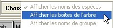
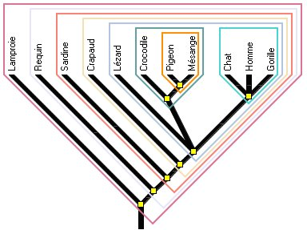

Établir des
relations de parenté (collège)
Établir des
relations de parenté (collège)
Établir des
relations de parenté (collège)
Établir des relations de
parenté (lycée)
L'établissement
des relations de parenté au collège
C'est l'interprétation de la classification par groupes emboîtés dans le cadre de l'évolution.
La Première étape consiste à ranger le tableauVoir la
méthode
Pendant cette étape et par la suite, il est possible
d'avoir accès aux
documents.
- L'arbre se construit en
même temps que les groupes se forment par sélection
successive des caractères.

Lorsque toutes les boîtes sont affichées, il faut nommer les groupes qu'elles représentent.
En parcourant l'arbre avec la souris, les noeuds sont alors nommés en conformité avec les boîtes.
- En cliquant sur les "noeud" correspondant aux ancêtres communs, on obtient des informations sur les caractères présents et la "boîte" correspondante s'entoure d'un halo vert.
On peut aussi faire aparaître les groupes sur l'arbre :

et même les noms de groupe dans les boîtes

Pour les collections qui contiennent des Fossiles il est ensuite possible de faire travailler les élèves sur le déroulement temporel des étapes de l'évolution avec l'activité Dater.
{kind=link}
{kind=link}